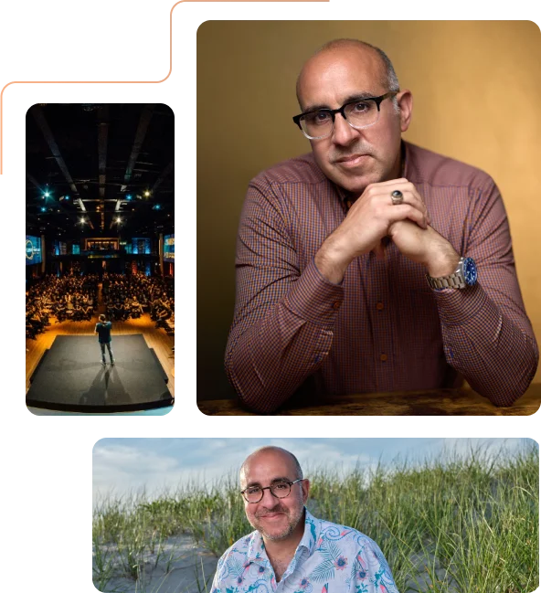
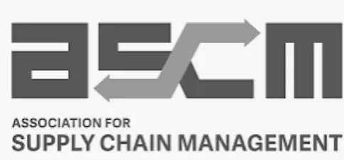

Global supply chain expert, CEO of The Atlas Network, and author of Supply Chain – Ups and Downs.

As a global entrepreneur, I am ever-curious, ever-growing, and ever-learning. Throughout my career, I have spearheaded numerous ventures that have significantly impacted the supply chain industry, all committed to innovation and excellence. I’ve written the first of many books, Supply Chain — Ups and Downs, and am genuinely passionate about sharing my knowledge in classrooms with students studying supply chain management and at industry conferences.
My career has spanned across a diverse range of sectors, including technology, retail, entertainment, real estate, spirits, packaging, sports equipment, medical, import/export, and banking. I have held notable positions at NASD/FINRA (National Association of Securities Dealers), Accenture, SEC, Friedman Billings Ramsey, and 24/7 Media, contributing to my broad understanding of the business landscape.
The Atlas Network, LLC, a leading global supply chain enterprise offering a comprehensive range of end-to-end services, including consulting, product development, factory selection, mass production oversight and management, quality control, documentation, logistics, shipping, and storage. Our mission is to streamline and optimize every aspect of the supply chain process, ensuring our clients achieve unparalleled efficiency and success.
I am the Founder and co-host of “The Supply and Demand Show” podcast and YouTube channel. We interview weekly leaders across the supply chain management industry.
The Global Crosswalk, LLC, is a SaaS tech solutions platform that streamlines project management lifecycles for the supply chain industry.
Passive Cedars, LLC is a solely owned investment and financing group that plays a passive role in strategic businesses looking to expand and/or create new venture opportunities.
I hold a BA in Finance, International Business, and Marketing from Washington University in St. Louis, an MBA in Business Law & Finance from American University, and an Artificial Intelligence & Business Strategy certification from MIT. I’m a perpetual student, always seeking equilibrium in thought, culture, business practices, and amongst people, and I hope to inspire others to embrace a similar journey of continuous learning.
One whose every goal is accomplished and dream fulfilled, lives not as an individual, but as an instrument of destiny


Bloomberg Television brings you the latest news and analysis leading up to the final minutes and seconds before and after...
Read more → Yahoo FinanceAs the Trump administration is optimistic on reaching a trade deal with China ahead of the president meeting with China's...
Watch → SUCCESSWhen I was younger, I thought being a leader meant carrying everything on my shoulders...
Read more → CO— by U.S. ChamberIn this edition of “Ask the Board,” we feature Kerim Kfuri, President and CEO of The Atlas Network LLC...
Read more → Inc.That’s according to Kerim Kfuri, CEO of packaging and supply chain solutions company The Atlas Network...
Read more → EntrepreneurAs tariffs and their effects on the supply chain begin to take shape, Kerim Kfuri, the president and CEO of...
Read more → FinTech.TVKerim Kfuri, President and CEO at The Atlas Network, LLC, joins Remy Blaire to delve into the complexities of the...
Watch → Chief ExecutiveEven with President Trump’s retreat on the most severe parts of his tariff regime, there are still many unanswered questions...
Read more → ABC NewsCo-founder and owner of Brooklyn Delhi, Chitra Agrawal and President & CEO of the Atlas Network, Kerim Kfuri join ABC...
Watch → LiveNOW from FOXThe White House says President Trump’s ‘Liberation Day’ tariffs will go into effect immediately...
Watch → Chief ExecutiveThe Trump administration has ushered in new round of uncertainty for global manufacturing, with shifting trade policies...
Read more → NewsNationA 25% tariff on Canadian and Mexican imports and a 10% tariff on Chinese goods could take effect as soon...
Watch → TIMEIn today’s globalized world, supply chains form the backbone of the economy...
Read more → Schwab NetworkPPI showed inflation hasn't shifted much, and Kerim Kfuri says it could be an early indicator to Wednesday's CPI report...
Watch → BenzingaRenowned supply expert Kerim Kfuri is pleased to announce that he has joined Daymond John's exclusive CEO Access program...
Read more → Yahoo FinancePresident-elect Donald Trump says he will instate 60% tariffs on imports from China and 25% tariffs on Canadian and Mexican...
Watch → LiveNOW from FOXKerim Kfuri, Global Supply Chain Analyst & Supply Chain Expert, CEO of The Atlas Network...
Watch → BenzingaKerim Kfuri, supply chain expert and author of Supply Chain Ups and Downs, has launched Chain Builder...
Read more → BenzingaThe new book shows that embracing and managing imbalances, rather than seeking equilibrium, is key to driving efficiency...
Read more → EIN PresswireDELIVER America, the premier retail and commerce matchmaking event...
Read more → KTNV Las VegasAs the President of The Atlas Network, Kerim is a seasoned expert in navigating the intricate web of global suppliers...
Watch → Rolling Stone UKKerim Kfuri, CEO of The Atlas Network, is not your typical executive...
Read more →
This book is an essential guide to cross-border trade and supply chain management. Written by Supply Chain Thought Leader Kerim Kfuri, a 20-year veteran, this book caters to students and seasoned professionals. Whether you’re just starting in the field or seeking to refresh your knowledge, this comprehensive book covers everything from A to Z, ensuring you’re equipped with the expertise needed for success.
From prototyping to sustainability, explore every aspect of the supply chain journey, gaining insights that will elevate your understanding and impact. Focused on practical applications and real-world scenarios, this definitive guide is your go-to resource for mastering all facets of this dynamic, ever-changing industry.
Get the book →Ready to book an engaging, personable author who inspires readers with practicality? Contact us for Kerim Kfuri’s availability to visit your company or bookstore for an eye-opening event.